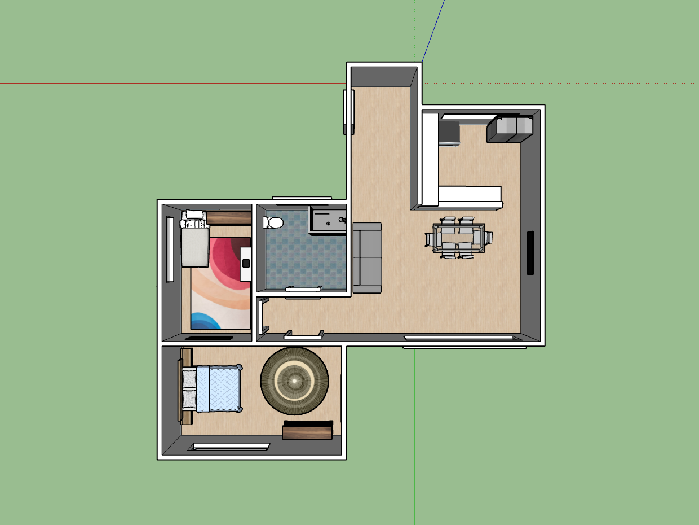

Submitted: Oct 16th, 2023 | Due Date: Oct 16th, 2023 | Grade: 100%
SketchUp is a program for 3D modeling and can be used for a varity of purposes such as architectural, interior design, industrial and product design, landscape architecture, civil and mechanical engineering, theater, film and video game development.
We disigned a house in SketchUp. We started with the floor plan by making a platform, offsetting it 6 inches in for walls, and then extruding them up 10 inches. To make more rooms we would extrude the base platform floor out and then offset it for the walls.
After we finished our floor plan we added furniture from the "3D Warehouse" where you can find user-created models to use.
This was my house's inside before I added a roof:
